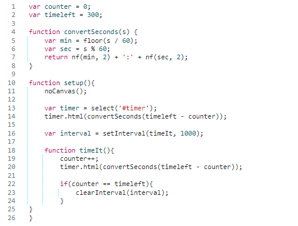

|
|
Lüftassistent 1.0
In einem Gruppenprojekt entwickelten wir den Lüftassistent 1.0.
Mit der Platine eines Keyboard als Basis hilft der Lüftassistent einem dabei, im Winter nicht länger als unbedingt nötig die Fenster offen zu lassen.
Die Idee kam uns, als wir im Ideenfindungsprozess waren und vergaßen das Fenster zu schließen.
Neben der Platine besteht der Haushaltshelfer aus Kabeln, welche mit 2 Kontaktplättchen am Fenster angebracht werden.
Diese schließen die Platine kurz und geben über Usb einen Tasteninput an den Computer weiter.
Die Kabel sind an die Kontakte der Taste "0" gelötet.
Die zugehörige Software mussten wir also ebenfalls durch diese Taste steuern können.

Der Lüftassistent ist in der Lage einen Timer von 5 min. zu starten, sobald die Taste "0" als not pressed erkannt wird.
Dieser Fall tritt ein, sobald das Fenster geöffnet, und somit der Kontakt un terbrochen wird.
Nach Ablauf des Timer ist das Fenster wieder zu schließen, der Timer wird zurückgesetzt und startet bei erneutem öffnen von vorne.
Wir haben den Code in eine Website inegriert, damit es für Jeden zugänglich und auch verwendbar ist.
lueftassistent

Der Code verwendet zwei Variablen, counter und timeleft, um die verstrichene Zeit und die Gesamtdauer des Countdowns zu verfolgen. Die Gesamtdauer ist auf 300 Sekunden (5 Minuten) eingestellt.
Es gibt eine Funktion namens convertSeconds(s), die eine Zeit in Sekunden in das Format "MM:SS" (Minuten:Sekunden) umwandelt.
Die Funktion setup() initialisiert den Timer. Sie verwendet noCanvas(), um eine grafische Zeichenfläche zu vermeiden. Der Timer wird im HTML-Dokument durch das Element mit der ID 'timer' dargestellt.
Ein Intervall wird mit setInterval(timeIt, 1000) erstellt, um die Funktion timeIt() alle 1000 Millisekunden (1 Sekunde) aufzurufen. Diese Funktion erhöht den Zähler, aktualisiert den Timer im HTML-Dokument und stoppt das Intervall, wenn die Gesamtdauer erreicht ist.
Insgesamt erstellt der Code also einen einfachen Countdown-Timer, der jede Sekunde aktualisiert wird und nach Ablauf der eingestellten Zeit stoppt.

Da wir uns zuvor nur wenig mit Hardware auseinander gesetzt haben, war dieses Projekt besonders interessant.
Ich habe Gefallen am Löten gefunden, als auch daran, sich mit Schaltkreisen, dem Aufbau von Platinen und der experimentellen Herangehensweise auseinander zu setzen.
Besonders interessant für mich war es zu hinterfragen, wie eigentlich eine Tastatur tatsächlich funktioniert, beziehungsweise wie man ausgehend davon die Komponenten dieser neu kombinieren und nutzen kann.
|